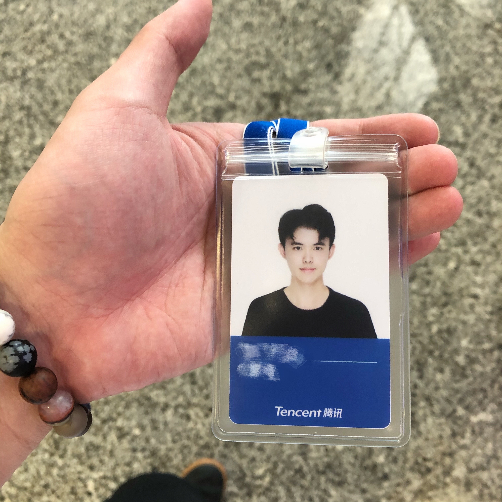
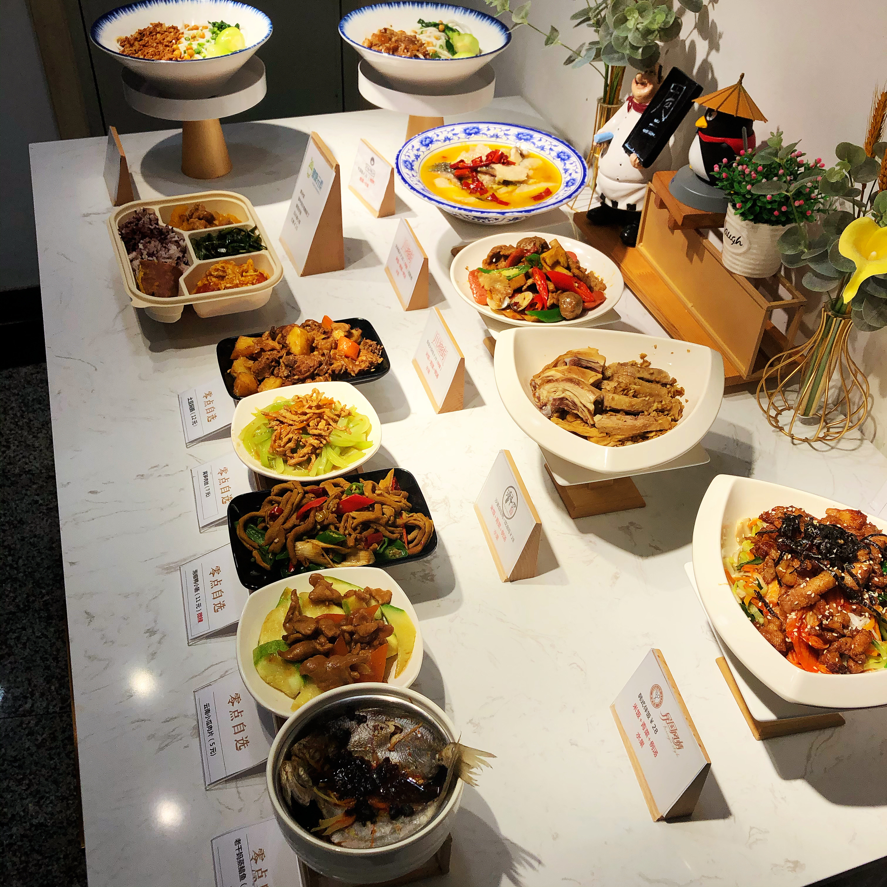
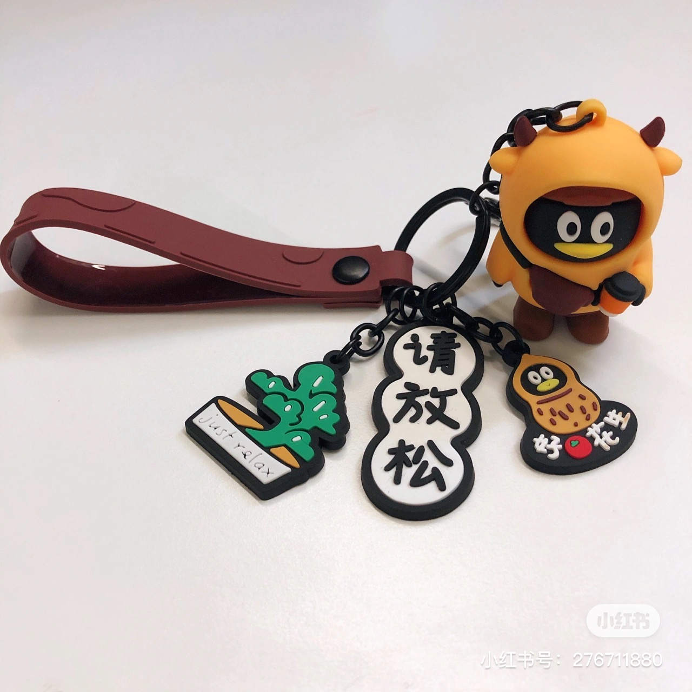
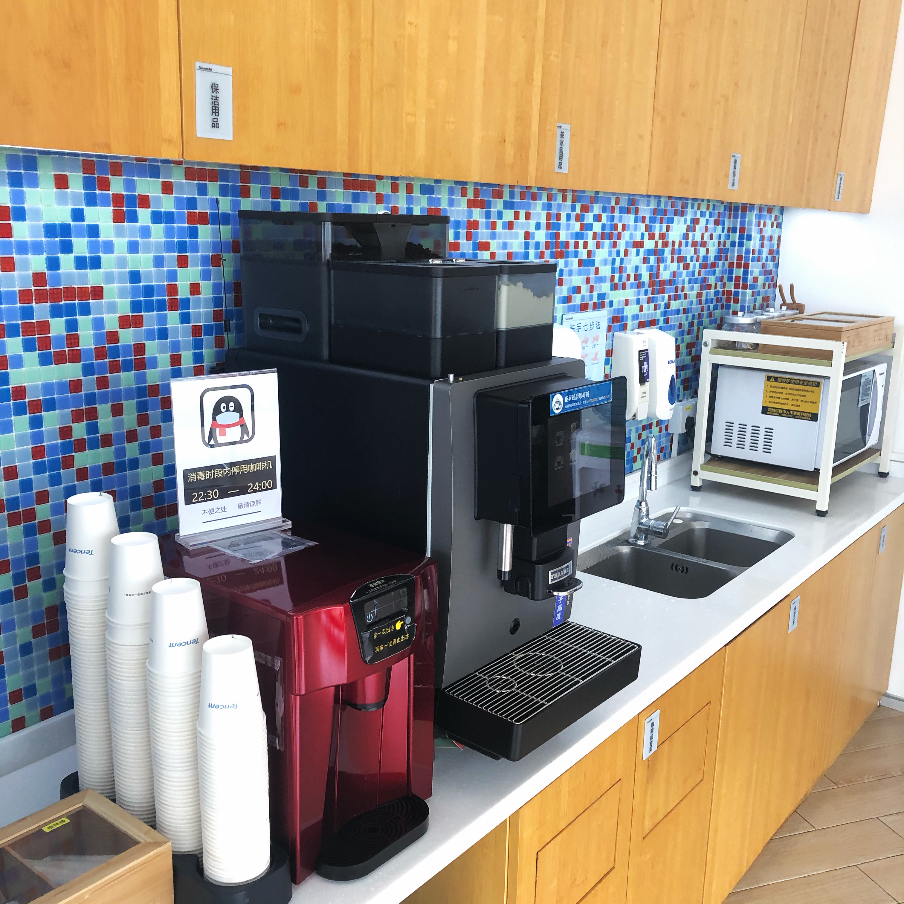
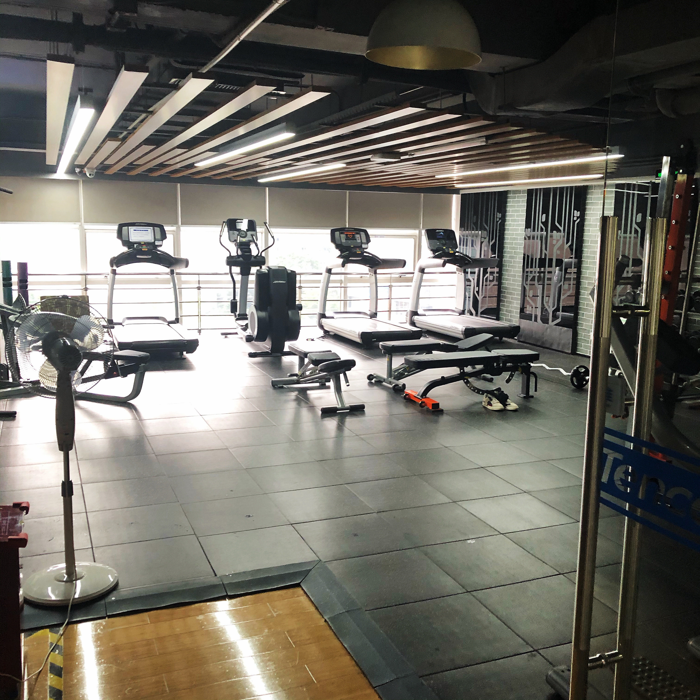

Share my internship experience.
2021.7.31
Preparation

Employee Benefits

- Benefits of summer interns at Tencent are pretty good:
- Primary treatment: good salary.
- Q coin: monthly delivery of Q coin or half-price Q coin.
- Small gifts: many dolls and toys will be sent after entry.
- Tea room: Lipton 🍵, coffee ☕️, milk 🥛 and so on.
- Entertainment room: table tennis table 🎱, table football ⚽️.
- Gym: open all day, and fitness classes are available.
- Three meals: all meals are free. Foods include sausage noodles, soup noodles, fried noodles, all kinds of dumplings, fried dough sticks, soybean milk, etc.
- Sports day: weekly activities of ⚽️, 🏓, and internal game competition will be organized.
- Group construction: team building activities every month.
Work Experience

The leaders and mentors in the group are amiable, friendly, and patiently answer all kinds of questions. I learned a lot from them.
The coral marketing platform is mainly responsible for TOB, helping different businesses to carry out marketing services more conveniently and reducing the cost of self-developed software or mini-programs.
The primary technology stacks used in the development process are javascript, HTML, CSS, Node.js, Vue, React, Koa, MySQL, MongoDB, Redis, Webpack, Docker, etc.
I knew Javascript, HTML, CSS, VUE, and React, but I was not skilled in practice. Therefore, during the development process of the project, I significantly improved my engineering ability. Besides front-end knowledge, because the technical stack required by the project team is full-stack, I still need to know more about the back-end, including Node.js and database knowledge. Although Node.js is based on javascript, many concepts and applications still need to be learned, including Koa and Egg frameworks.
At the same time, the connection of the front-end and back-end also needs to study. Axios is one of the vital technology. How to use it to carry out data transmission and what type of transmission all need to know. The operation of the database is not only "add" and "delete," but also needs to know deeply about transactions, lock, and such concepts. Besides, I need to learn about network security, such as how to protect against SQL injection, how the front-end protects against XSS attacks, etc.
In terms of team cooperation, we also need to be skilled in using Git for operation, TAPD for project management, etc.
In the process of practice, I found a big gap between theory and practice. Maybe what we learn in college doesn't all apply in the workplace. For example, how to communicate effectively in the workplace is not taught in school. Therefore, I cherish this internship opportunity, and I did learn a lot.
More Images


